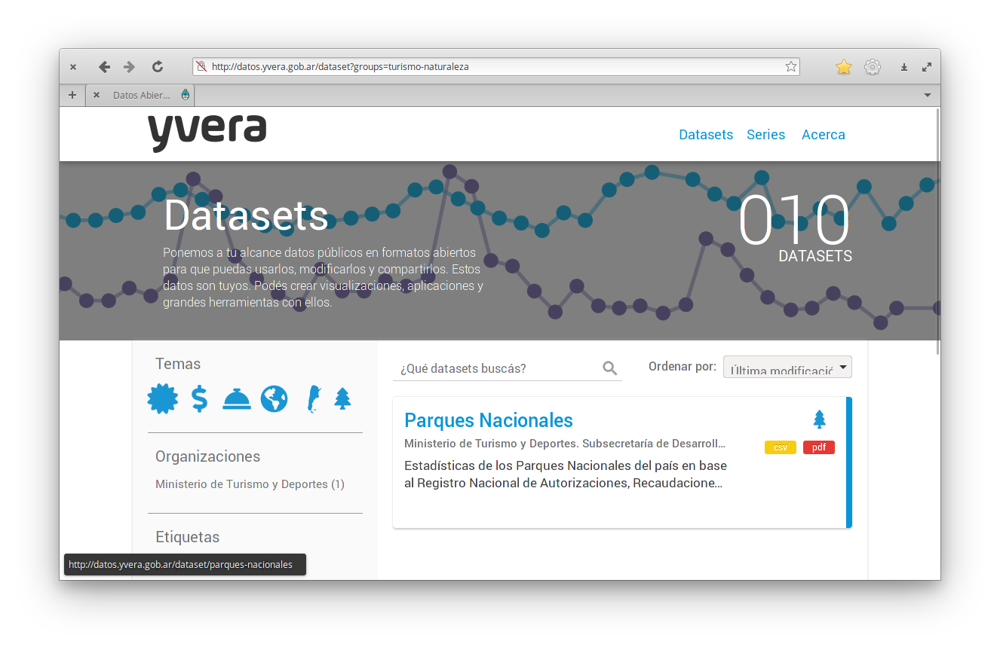
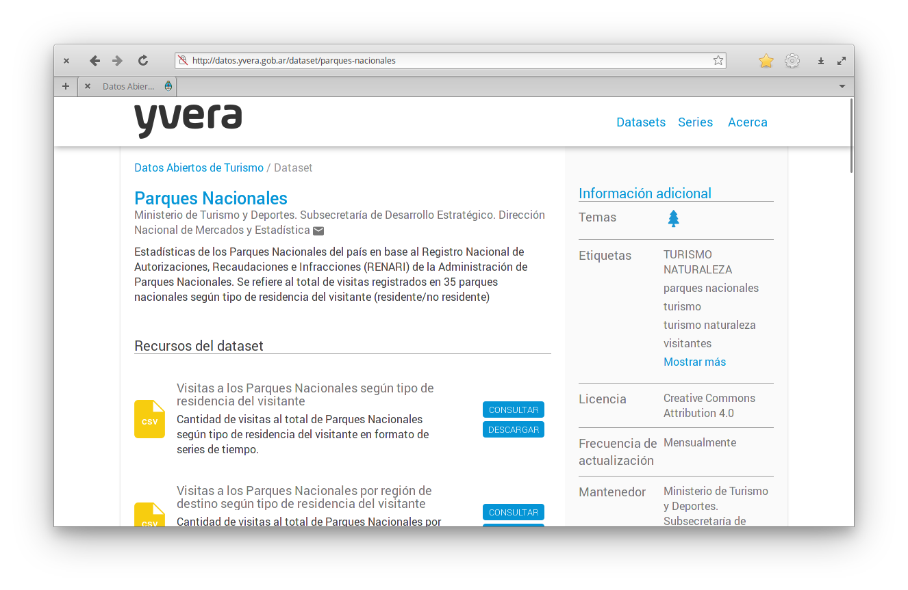
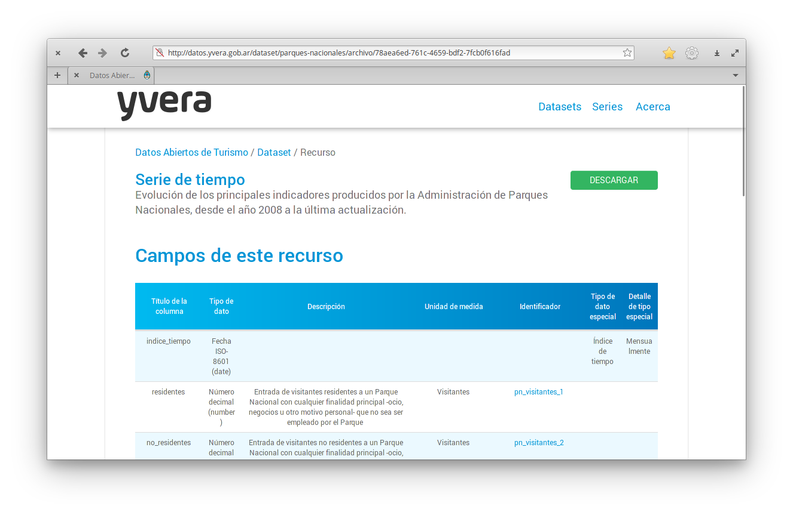
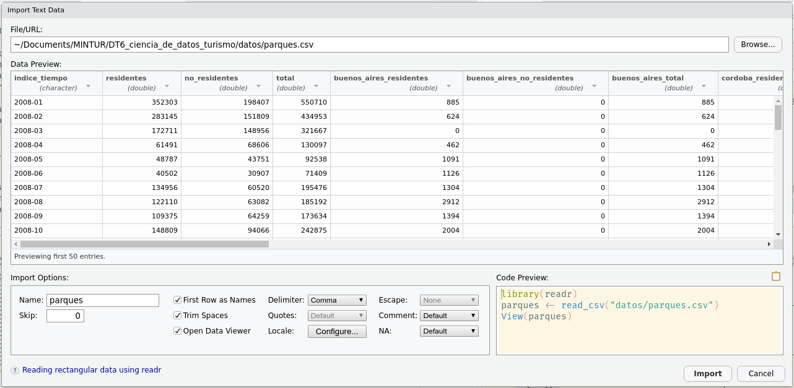
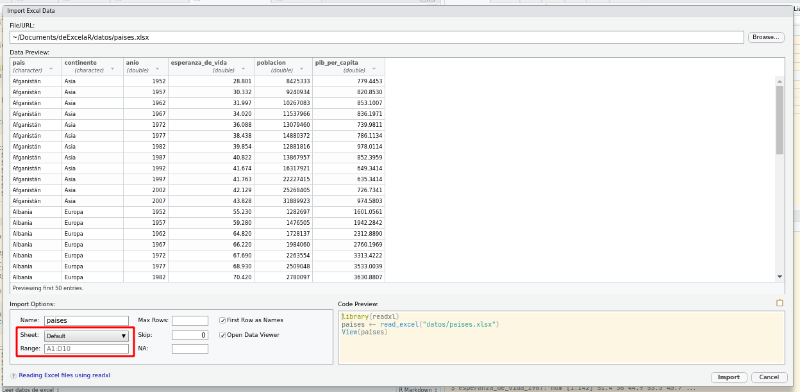

Capítulo 4 Lectura de datos ordenados
4.1 Descargando datos
Antes de poder leer cualquier dato en R, primero hay que encontrarlo y descargarlo. El Ministerio de Turismo mantiene un portal de datos abierto llamado Yvera donde podés buscar y descargar datos relacionados con el turismo en Argentina.
En esta sección vamos a descargar una serie de tiempo de los principales indicadores producidos por la Administración de Parques Nacionales.
Primero, navegá a http://datos.yvera.gob.ar/, donde te vas a encontrar con la páigna principal de Yvera.

La base de datos que vamos a descargar está en el área de Turismo Naturaleza, así que hacé click en ese ícono para navegar a la sección de datasets correspondiente.

Al momento que escribimos esta guía sólo el set de datos de Parques Nacionales es el único disponible en el tema Turismo Naturaleza. Hacé click ahí para ir a la página de este set de datos.

Este set de datos tiene distintos recursos. Varios son datos, como “Visitas a los Parques Nacionales según tipo de residencia del visitante” o “Visitas a los Parques Nacionales por región de destino según tipo de residencia del visitante”, pero también hay un recurso llamado “Ficha Técnica: Parques Nacionales”. Este es un PDF con la descripción de los datos así como consideraciones metodológicas relevantes. Es importante que si vas a usar datos siempre mires la ficha técnica para hacerte una idea de las limitaciones metodológicas que pueden tener estos datos.
Por ahora vamos a descargar la serie de tiempo.

En esta pantalla te vas a encontrar con una descripción del set de datos y sus variables. Para descargar los datos hay que hacer click en el botón que dice “DESCARGAR”. Guardalo en una carpeta dentro del proyecto (recomedamos organizar los datos en una carpeta llamada “datos”) y ya está listo para leer.
Pero si tuvieras que realizar un informe mensual sobre Parques Nacionales tendrías que hacer toda esta descarga manual cada vez que se actualiza el informe. La gracia de usar código es automatizar todo lo más posible así que en vez de descargar manualmente el archivo, se puede descargar automáticamente desde el código de R.
Para eso, primero necesitás la dirección (URL) del set de datos. Eso se consigue yendo a la página del set de datos y en vez de hacer click en DESCAGAR, haciendo
Click derecho → Copiar dirección del enlace
La URL de la serie de parques nacionales es http://datos.yvera.gob.ar/dataset/458bcbe1-855c-4bc3-a1c9-cd4e84fedbbc/resource/78aea6ed-761c-4659-bdf2-7fcb0f616fad/download/serie-tiempo-parques-nacionales-mensual.csv.
Guaramos eso en una variable en R
parques_url <- "http://datos.yvera.gob.ar/dataset/458bcbe1-855c-4bc3-a1c9-cd4e84fedbbc/resource/78aea6ed-761c-4659-bdf2-7fcb0f616fad/download/serie-tiempo-parques-nacionales-mensual.csv"Y también definimos la ruta donde descargar el archivo
parques_archivo <- "datos/parques.csv"Y finalmente usamos la función download.file() para descargar el archivo.
download.file(url = parques_url, destfile = parques_archivo) Y esto va a descargar la última versión de la serie de Parques Nacionales.
4.2 Leer datos csv
Existen muchas funciones distintas para leer datos dependiendo del formato en el que están guardados. Para datos tabulares, la forma más útil es el formato csv, que es un archivo de texto plano con datos separados por coma.
Para importar datos hace falta escribir el código correspondiente pero también podés aprovechar el entorno gráfico de RStudio:
File → Import Dataset → From Text (readr)…
Esto te va abrir una ventana donde podrás elegir el archivo a importar (en este caso el archivo parques.csv que está dentro de la capeta datos del proyecto) y otros detalles.
knitr::include_graphics("img/importar-parques.png")
En la pantalla principal vas a poder previsualizar los datos y ver que pinta tienen.
Abajo a la izquierda tenés varias opciones: el nombre que vas a usar para la variable (en este caso llamaremos parques), si la primera fila contiene los nombres de las columnas (First Row as Names), qué delimitador tienen los datos (en este caso comma, pero podría ser punto y coma u otro), etc…
Y abajo a la derecha es el código que vas a necesitar para efectivamente importar los datos.
Podrías apretar el botón “Import” para leer los datos pero si bien es posible, al mismo tiempo esas líneas de código no se guardan en ningún lado y entonces nuestro trabajo luego no se puede reproducir.
Por eso, te proponemos que copies ese código, cierres esa ventana con el botón “Cancel”, y pegues el código en el archivo donde estés trabajando.
Cuando lo ejecutes, se va a generar la variable parques con los datos.
library(readr)
parques <- read_csv("datos/parques.csv")## Rows: 160 Columns: 22## ── Column specification ────────────────────────────────────────────────────────
## Delimiter: ","
## chr (1): indice_tiempo
## dbl (21): residentes, no_residentes, total, buenos_aires_residentes, buenos_...##
## ℹ Use `spec()` to retrieve the full column specification for this data.
## ℹ Specify the column types or set `show_col_types = FALSE` to quiet this message.Nota: Notá que en este caso el código para leer los datos consta de dos líneas.
La primera carga el paquete readr y el segundo usa la función read_csv() (del paquete readr) para leer el archivo .csv.
No es necesario cargar el paquete cada vez que vas a leer un archivo, pero asegurate de incluir esta línea al comienzo de tu archivo.
Nota: La interfaz de usuario de RStudio sirve para autogenerar el código que lee el archivo. Una vez que lo tenés, no necesitás abrirla de nuevo.
Todo ese texto naranja/rojo es intimidante pero no te preocupes, es sólo un mensaje que nos informa que los datos se leyeron y qué tipo de dato tiene cada columna.
Podemos explorar la estructura de la variable parques usando la función str() (de structure en inglés).
str(parques)## spec_tbl_df [160 × 22] (S3: spec_tbl_df/tbl_df/tbl/data.frame)
## $ indice_tiempo : chr [1:160] "2008-01" "2008-02" "2008-03" "2008-04" ...
## $ residentes : num [1:160] 352303 283145 172711 61491 48787 ...
## $ no_residentes : num [1:160] 198407 151809 148956 68606 43751 ...
## $ total : num [1:160] 550710 434953 321667 130097 92538 ...
## $ buenos_aires_residentes : num [1:160] 885 624 0 462 1091 ...
## $ buenos_aires_no_residentes: num [1:160] 0 0 0 0 0 0 0 0 0 0 ...
## $ buenos_aires_total : num [1:160] 885 624 0 462 1091 ...
## $ cordoba_residentes : num [1:160] 717 475 741 539 608 ...
## $ cordoba_no_residentes : num [1:160] 145 148 147 166 129 80 272 224 134 168 ...
## $ cordoba_total : num [1:160] 862 623 888 705 737 ...
## $ cuyo_residentes : num [1:160] 4965 4803 5722 1730 2299 ...
## $ cuyo_no_residentes : num [1:160] 179 139 178 78 103 31 131 109 76 150 ...
## $ cuyo_total : num [1:160] 5144 4942 5900 1808 2402 ...
## $ litoral_residentes : num [1:160] 111408 85853 59150 23821 28538 ...
## $ litoral_no_residentes : num [1:160] 55335 53596 55130 30827 29818 ...
## $ litoral_total : num [1:160] 166743 139449 114280 54648 58356 ...
## $ norte_residentes : num [1:160] 4241 5099 9204 3867 5083 ...
## $ norte_no_residentes : num [1:160] 774 1294 1696 728 663 ...
## $ norte_total : num [1:160] 5016 6393 10900 4595 5746 ...
## $ patagonia_residentes : num [1:160] 230087 186291 97894 31073 11169 ...
## $ patagonia_no_residentes : num [1:160] 141973 96632 91805 36807 13038 ...
## $ patagonia_total : num [1:160] 372060 282923 189699 67879 24206 ...
## - attr(*, "spec")=
## .. cols(
## .. indice_tiempo = col_character(),
## .. residentes = col_double(),
## .. no_residentes = col_double(),
## .. total = col_double(),
## .. buenos_aires_residentes = col_double(),
## .. buenos_aires_no_residentes = col_double(),
## .. buenos_aires_total = col_double(),
## .. cordoba_residentes = col_double(),
## .. cordoba_no_residentes = col_double(),
## .. cordoba_total = col_double(),
## .. cuyo_residentes = col_double(),
## .. cuyo_no_residentes = col_double(),
## .. cuyo_total = col_double(),
## .. litoral_residentes = col_double(),
## .. litoral_no_residentes = col_double(),
## .. litoral_total = col_double(),
## .. norte_residentes = col_double(),
## .. norte_no_residentes = col_double(),
## .. norte_total = col_double(),
## .. patagonia_residentes = col_double(),
## .. patagonia_no_residentes = col_double(),
## .. patagonia_total = col_double()
## .. )
## - attr(*, "problems")=<externalptr>Esto nos dice un montón.
La primera línea dice que es una tibble, que es un caso especial de la estructura de datos tabular básica de R llamada data.frame.
Tiene 160 filas (las observaciones) y 22 columnas (o variables que describen las observaciones).
Las siguientes líneas nos dicen los nombres de las columnas (indice_tiempo, residentes, no_residentes, etc…), su tipo de dato (chr o num), la longitud ([1:160]) y sus primeros elementos.
4.3 Leer datos de excel
Si tenés la vista avispada, habrás notado que en el menú de “Import Dataset” hay una opción para leer datos de Excel. En efecto, RStudio provee la misma ayuda para leer este tipo de datos:
File → Import Dataset → From Excel…

Notá que entre las opciones de abajo a la izquierda aparecen dos variables importantes. Podés seleccionar de qué hoja leer los datos y qué rango usar. Esto seguro que te va a ser muy útil para esos archivos de Excel con múltiples tablas en un archivo, o incluso múltiples tablas en cada hoja!
En este caso paises.xlsx es un Excel buena onda, y el código para leer los datos es muy simple:
library(readxl)
paises <- read_excel("datos/paises.xlsx")Con la función str() podés confirmar que los datos leídos son los mismos que para el csv.
str(paises)## tibble [1,704 × 6] (S3: tbl_df/tbl/data.frame)
## $ pais : chr [1:1704] "Afganistán" "Afganistán" "Afganistán" "Afganistán" ...
## $ continente : chr [1:1704] "Asia" "Asia" "Asia" "Asia" ...
## $ anio : num [1:1704] 1952 1957 1962 1967 1972 ...
## $ esperanza_de_vida: num [1:1704] 28.8 30.3 32 34 36.1 ...
## $ poblacion : num [1:1704] 8425333 9240934 10267083 11537966 13079460 ...
## $ pib_per_capita : num [1:1704] 779 821 853 836 740 ...Desafío: Lee un archivo
- Lee el archivo
paises.xlsx, pero solo las primeras 30 lineas - ¿Qué cambió en código que devuelve RStudio?
- Revisa la documentación de la función
read_excel()para identificar otros argumentos que puedan resultarte útiles.
4.4 Formatos de tablas
Pensá un momento en la estructura de los datos de paises.
Tiene seis columnas, pero sólo tres de ellas contienen valores observados (esperanza_de_vida, poblacion y pib_per_capita) y las otras tres son las “coordenadas”: pais, continente y anio son columnas que identifican la observación.
De hecho, la columna pais tiene un montón de datos repetidos!
Esto es un ejemplo de formato “largo” (o “tidy” en inglés). La idea básica de datos “largos” es que:
- cada fila es una observación
- cada columna es una variable
La tabla paises es bastante larga (tiene 1704 filas y 6 columnas!) pero podría ser más larga aún.
paises_largo <- read_csv("datos/paises_largo.csv")
str(paises_largo)## spec_tbl_df [5,112 × 5] (S3: spec_tbl_df/tbl_df/tbl/data.frame)
## $ pais : chr [1:5112] "Afganistán" "Afganistán" "Afganistán" "Afganistán" ...
## $ continente: chr [1:5112] "Asia" "Asia" "Asia" "Asia" ...
## $ anio : num [1:5112] 1952 1957 1962 1967 1972 ...
## $ variable : chr [1:5112] "esperanza_de_vida" "esperanza_de_vida" "esperanza_de_vida" "esperanza_de_vida" ...
## $ valor : num [1:5112] 28.8 30.3 32 34 36.1 ...
## - attr(*, "spec")=
## .. cols(
## .. pais = col_character(),
## .. continente = col_character(),
## .. anio = col_double(),
## .. variable = col_character(),
## .. valor = col_double()
## .. )
## - attr(*, "problems")=<externalptr>La tabla paises_largo tiene ¡5112 filas!
Tiene un valor para cada país, año y variable.
Es decir, las tres columnas que contenían valores numéricos (esperanza_de_vida, poblacion y pib_per_capita), en esta tabla son una sola columna llamada “valor”.
Pero también pueden ser podría ser más “ancha”:
paises_ancho <- read_csv("datos/paises_ancho.csv")
str(paises_ancho)## spec_tbl_df [142 × 38] (S3: spec_tbl_df/tbl_df/tbl/data.frame)
## $ continente : chr [1:142] "Africa" "Africa" "Africa" "Africa" ...
## $ pais : chr [1:142] "Algeria" "Angola" "Benin" "Botswana" ...
## $ pib_per_capita_1952 : num [1:142] 2449 3521 1063 851 543 ...
## $ pib_per_capita_1957 : num [1:142] 3014 3828 960 918 617 ...
## $ pib_per_capita_1962 : num [1:142] 2551 4269 949 984 723 ...
## $ pib_per_capita_1967 : num [1:142] 3247 5523 1036 1215 795 ...
## $ pib_per_capita_1972 : num [1:142] 4183 5473 1086 2264 855 ...
## $ pib_per_capita_1977 : num [1:142] 4910 3009 1029 3215 743 ...
## $ pib_per_capita_1982 : num [1:142] 5745 2757 1278 4551 807 ...
## $ pib_per_capita_1987 : num [1:142] 5681 2430 1226 6206 912 ...
## $ pib_per_capita_1992 : num [1:142] 5023 2628 1191 7954 932 ...
## $ pib_per_capita_1997 : num [1:142] 4797 2277 1233 8647 946 ...
## $ pib_per_capita_2002 : num [1:142] 5288 2773 1373 11004 1038 ...
## $ pib_per_capita_2007 : num [1:142] 6223 4797 1441 12570 1217 ...
## $ esperanza_de_vida_1952: num [1:142] 43.1 30 38.2 47.6 32 ...
## $ esperanza_de_vida_1957: num [1:142] 45.7 32 40.4 49.6 34.9 ...
## $ esperanza_de_vida_1962: num [1:142] 48.3 34 42.6 51.5 37.8 ...
## $ esperanza_de_vida_1967: num [1:142] 51.4 36 44.9 53.3 40.7 ...
## $ esperanza_de_vida_1972: num [1:142] 54.5 37.9 47 56 43.6 ...
## $ esperanza_de_vida_1977: num [1:142] 58 39.5 49.2 59.3 46.1 ...
## $ esperanza_de_vida_1982: num [1:142] 61.4 39.9 50.9 61.5 48.1 ...
## $ esperanza_de_vida_1987: num [1:142] 65.8 39.9 52.3 63.6 49.6 ...
## $ esperanza_de_vida_1992: num [1:142] 67.7 40.6 53.9 62.7 50.3 ...
## $ esperanza_de_vida_1997: num [1:142] 69.2 41 54.8 52.6 50.3 ...
## $ esperanza_de_vida_2002: num [1:142] 71 41 54.4 46.6 50.6 ...
## $ esperanza_de_vida_2007: num [1:142] 72.3 42.7 56.7 50.7 52.3 ...
## $ poblacion_1952 : num [1:142] 9279525 4232095 1738315 442308 4469979 ...
## $ poblacion_1957 : num [1:142] 10270856 4561361 1925173 474639 4713416 ...
## $ poblacion_1962 : num [1:142] 11000948 4826015 2151895 512764 4919632 ...
## $ poblacion_1967 : num [1:142] 12760499 5247469 2427334 553541 5127935 ...
## $ poblacion_1972 : num [1:142] 14760787 5894858 2761407 619351 5433886 ...
## $ poblacion_1977 : num [1:142] 17152804 6162675 3168267 781472 5889574 ...
## $ poblacion_1982 : num [1:142] 20033753 7016384 3641603 970347 6634596 ...
## $ poblacion_1987 : num [1:142] 23254956 7874230 4243788 1151184 7586551 ...
## $ poblacion_1992 : num [1:142] 26298373 8735988 4981671 1342614 8878303 ...
## $ poblacion_1997 : num [1:142] 29072015 9875024 6066080 1536536 10352843 ...
## $ poblacion_2002 : num [1:142] 31287142 10866106 7026113 1630347 12251209 ...
## $ poblacion_2007 : num [1:142] 33333216 12420476 8078314 1639131 14326203 ...
## - attr(*, "spec")=
## .. cols(
## .. continente = col_character(),
## .. pais = col_character(),
## .. pib_per_capita_1952 = col_double(),
## .. pib_per_capita_1957 = col_double(),
## .. pib_per_capita_1962 = col_double(),
## .. pib_per_capita_1967 = col_double(),
## .. pib_per_capita_1972 = col_double(),
## .. pib_per_capita_1977 = col_double(),
## .. pib_per_capita_1982 = col_double(),
## .. pib_per_capita_1987 = col_double(),
## .. pib_per_capita_1992 = col_double(),
## .. pib_per_capita_1997 = col_double(),
## .. pib_per_capita_2002 = col_double(),
## .. pib_per_capita_2007 = col_double(),
## .. esperanza_de_vida_1952 = col_double(),
## .. esperanza_de_vida_1957 = col_double(),
## .. esperanza_de_vida_1962 = col_double(),
## .. esperanza_de_vida_1967 = col_double(),
## .. esperanza_de_vida_1972 = col_double(),
## .. esperanza_de_vida_1977 = col_double(),
## .. esperanza_de_vida_1982 = col_double(),
## .. esperanza_de_vida_1987 = col_double(),
## .. esperanza_de_vida_1992 = col_double(),
## .. esperanza_de_vida_1997 = col_double(),
## .. esperanza_de_vida_2002 = col_double(),
## .. esperanza_de_vida_2007 = col_double(),
## .. poblacion_1952 = col_double(),
## .. poblacion_1957 = col_double(),
## .. poblacion_1962 = col_double(),
## .. poblacion_1967 = col_double(),
## .. poblacion_1972 = col_double(),
## .. poblacion_1977 = col_double(),
## .. poblacion_1982 = col_double(),
## .. poblacion_1987 = col_double(),
## .. poblacion_1992 = col_double(),
## .. poblacion_1997 = col_double(),
## .. poblacion_2002 = col_double(),
## .. poblacion_2007 = col_double()
## .. )
## - attr(*, "problems")=<externalptr>paises_ancho tiene una sola fila para cada país, y los datos de cada variable y año está en una columna propia.
Ninguna estructura de datos es “la correcta”; distintos análisis y distintas funciones se llevan mejor con los datos en distinto “grado de longitud”. Es muy normal empezar con datos largos, tener que pasarlos a anchos para hacer un análisis y luego volver a pasar a largos (tan normal que hay un paquete de R que encapsula ese proceso).